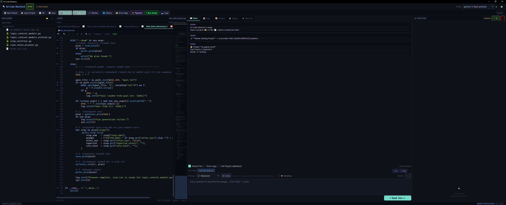

Surgical patching · 8 AI strategies · Autonomous improvement loops
Live script execution · Interactive stdin · 15+ languages · Offline-first
Core Capabilities
Modular architecture that adapts to your workflow — from offline hacking to fully autonomous improvement pipelines.
The Interface
File explorer · Code editor with syntax highlighting · AI chat with streaming · Patch review panel — all in one window.

Auto-Improve Pipeline
The pipeline runs your scripts autonomously — observe, patch, validate, repeat — until the goal is reached or the iteration limit is hit.
Live Script Execution
Real-time stdout/stderr streaming directly to the Logs tab. Type into your running script's stdin without leaving the IDE — works for every supported language.
#! shebang, that interpreter is used automatically.New Project Mode
No file open? No problem. Just describe what you want — AI generates the complete file with the correct extension, saves it, and opens it in the editor.
Patch System
The AI never rewrites your entire file. It identifies the exact block that needs changing and replaces only that — surgically.
Sherlock Mode
Enable Sherlock Mode and let the AI act as a detective. It reads your error logs, traces the call stack, and pinpoints the root cause — not just the surface crash.
Consensus Engine
Query multiple AI models simultaneously and let them vote, compete, merge, or judge each other's responses. The strongest patch wins.
Error Map
Every error is indexed, deduplicated, and stored with its confirmed solution. Avoid-patterns prevent AI from trying approaches that already failed.
Universal Inputs
The pipeline converts your script's output files into AI context — regardless of format.
Privacy First
Built local-first. Run entirely offline with Ollama — code, training data, and model weights never leave your machine.
ollama serve and Sherlock connects automatically. No API keys. No telemetry. No network calls required.~/.ai_code_sherlock/settings.json outside the project directory. Never committed to Git.Get Started
Three packages. One command. That's the entire setup.
# 1. Clone the repo
$ git clone https://github.com/signupss/ai-code-sherlock.git
$ cd ai-code-sherlock
# 2. Install dependencies
$ pip install -r requirements.txt
# 3. Run AI Code Sherlock
$ python main.py
# Optional: local AI with Ollama
$ ollama serve && ollama pull deepseek-coder-v2
# Windows — double-click launcher
$ run.batSupport the Project
💙AI Code Sherlock is free and open-source. If it saves you hours of debugging or helps your pipeline converge faster — consider supporting continued development. Every contribution keeps the project alive and actively maintained.
Want to be listed as a sponsor? Open an Issue titled [Sponsor] after donating — we'll add your name to the README. Thank you. 🙏
Ready?
Set a goal. Configure a pipeline. Let Sherlock iterate until your model converges, your tests pass, or your bug disappears.